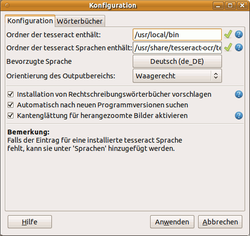
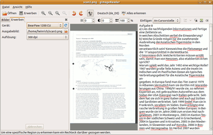

gImageReader
Dieser Artikel wurde für die folgenden Ubuntu-Versionen getestet:
Ubuntu 16.04 Xenial Xerus
Ubuntu 14.04 Trusty Tahr
Zum Verständnis dieses Artikels sind folgende Seiten hilfreich:
 gImageReader
gImageReader  ist ein einfach zu bedienendes Frontend für das OCR-Programm tesseract-ocr (Versionen 2.0x und 3.0x werden unterstützt). Es ermöglicht die Texterkennung aus vorliegenden Bilddateien (es sind alle gängigen Formate verwendbar, auch PDF-Dateien), sowie den direkten Import über einen SANE-fähigen Scanner. Dabei sind alle von tesseract unterstützten Sprachen verwendbar, auch ggf. selbst erstellte. Im Programm wird außerdem eine Rechtschreibprüfung (über GTKSpell mit Hunspell) verwendet, die Sprache ist einstellbar. Die Erkennung ist aufgrund des sehr guten Texterkennungsprogramms bei vernünftigen Vorlagen hervorragend. Das Programm wird vom Entwickler allerdings noch als im "beta"-Stadium befindlich geführt.
ist ein einfach zu bedienendes Frontend für das OCR-Programm tesseract-ocr (Versionen 2.0x und 3.0x werden unterstützt). Es ermöglicht die Texterkennung aus vorliegenden Bilddateien (es sind alle gängigen Formate verwendbar, auch PDF-Dateien), sowie den direkten Import über einen SANE-fähigen Scanner. Dabei sind alle von tesseract unterstützten Sprachen verwendbar, auch ggf. selbst erstellte. Im Programm wird außerdem eine Rechtschreibprüfung (über GTKSpell mit Hunspell) verwendet, die Sprache ist einstellbar. Die Erkennung ist aufgrund des sehr guten Texterkennungsprogramms bei vernünftigen Vorlagen hervorragend. Das Programm wird vom Entwickler allerdings noch als im "beta"-Stadium befindlich geführt.
Voraussetzungen¶
Zur Verwendung wird für ältere Versionen, die nicht aus den Ubuntu-Quellen stammen - neben den Abhängigkeiten, die direkt installiert werden - ggf. noch ein Paket benötigt, wenn der Scanner direkt vom Programm aus angesprochen werden soll[1]:
python-imaging-sane
 mit apturl
mit apturl
Paketliste zum Kopieren:
sudo apt-get install python-imaging-sane
sudo aptitude install python-imaging-sane
Installation¶
Seit Ubuntu 15.10 liegt gImageReader in den offiziellen Paketquellen vor.
gimagereader
mit apturl
Paketliste zum Kopieren:
sudo apt-get install gimagereader
sudo aptitude install gimagereader
PPA¶
Ab Ubuntu 13.10 ist der Einsatz eines PPAs empfehlenswert:
Adresszeile zum Hinzufügen des PPAs:
ppa:sandromani/gimagereader
Hinweis!
Zusätzliche Fremdquellen können das System gefährden.
Ein PPA unterstützt nicht zwangsläufig alle Ubuntu-Versionen. Weitere Informationen sind der  PPA-Beschreibung des Eigentümers/Teams sandromani zu entnehmen.
PPA-Beschreibung des Eigentümers/Teams sandromani zu entnehmen.
Damit Pakete aus dem PPA genutzt werden können, müssen die Paketquellen neu eingelesen werden.
Bei Verwendung ab Ubuntu 15.10 wird aus dem PPA eine Version > 3.1.19 installiert, die zwei "Frontends" beinhaltet, eine GTK- und eine qt5-Version, die auch nebeneinander installierbar sind, dazu ein gemeinsames common-Paket.
Achtung!
Vorher muss ein ggf. installiertes Paket libgtkspellmm-3.0-0v5 entfernt werden, da als Abhängigkeit aus dem PPA auch das Paket libgtkspellmm-3.0-1 installiert wird, es aber zu Konflikten zwischen den beiden Paketen kommt, die die Paketverwaltung lahmlegen können!
Nach dem Aktualisieren der Paketquellen können folgende Pakete installiert werden:
gimagereader-common (ppa)
gimagereader-gtk (optional, und/oder)
gimagereader-qt5 (optional)
mit apturl
Paketliste zum Kopieren:
sudo apt-get install gimagereader-common gimagereader-gtk gimagereader-qt5
sudo aptitude install gimagereader-common gimagereader-gtk gimagereader-qt5

Konfiguration¶
Nach erfolgreicher Installation ist bei Ubuntu-Varianten mit einem Anwendungsmenü ein Eintrag unter "Grafik -> gImageReader" zu finden.
Unter "Datei -> Konfigurieren" lassen sich die Pfade zur verwendeten Tesseract-Installation und dem dazugehörigen Sprachenverzeichnis ändern. Im Normalfall erkennt gImageReader die richtigen Pfade. Darunter lässt sich, wenn nötig, die bevorzugte Sprache verändern und die Ausrichtung der Felder im Hauptfenster verändern.
Darunter können weitere Angaben (Vorschläge zur Installation von Rechtschreibprogrammen, automatische Abfrage nach neuen Programmversion, Einsatz von Kantenglättung) gemacht werden.
Unter "Wörterbücher" lassen sich Angaben zu weiteren Wörterbüchern machen, falls spezielle Versionen, die nicht standardmäßig erkannt wurden, verwendet werden sollen.
Bedienung¶
Das Hauptfenster öffnet sich zunächst leer, über die Schaltfläche "Öffnen" (oder "Datei - Bilder Öffnen") lassen sich Bilddateien öffnen, die in der Seitenleiste als Vorschaubilder aufgelistet werden. Das jeweils ausgewählte Bild wird in der Mitte dargestellte, die Ansicht lässt sich über die Schaltflächen oben einstellen (Zoomen, Einpassen, Drehen, auch über den Reiter "Ansicht" erreichbar). Über die Schaltfläche "Bildbearbeitungsregler anzeigen" lassen sich Einstellungsmöglichkeiten zur Helligkeit, Kontrast und Auflösung des Bildes einblenden, sehr sinnvoll für schlechte Vorlagen etc.

Im Bild selbst kann über Ziehen bei gedrückter  -Taste ein Ausschnitt festgelegt werden, der ausgelesen werden soll, was gerade bei verschachtelten Vorlagen mit Bildern nützlich sein kann. Die Erkennung wird dann über die Schaltfläche "Alles erkennen" (bei Teilauswahl "Selektion erkennen") gestartet, das Ergebnis erscheint nach kurzer Zeit im Fenster daneben. "Fehlerhaft" erkannte Wörter sind rot unterstrichen, in dem Fenster kann direkt korrigiert und umgestellt werden. Zudem kann über einen
-Taste ein Ausschnitt festgelegt werden, der ausgelesen werden soll, was gerade bei verschachtelten Vorlagen mit Bildern nützlich sein kann. Die Erkennung wird dann über die Schaltfläche "Alles erkennen" (bei Teilauswahl "Selektion erkennen") gestartet, das Ergebnis erscheint nach kurzer Zeit im Fenster daneben. "Fehlerhaft" erkannte Wörter sind rot unterstrichen, in dem Fenster kann direkt korrigiert und umgestellt werden. Zudem kann über einen  -Klick ein Kontextmenü mit weiteren Bearbeitungsoptionen geöffnet werden, bei einem -Klick auf ein unterschlängeltes Wort werden Alternativen angeboten, die direkt angewandt werden, oder auch das Wort in das Benutzerwörterbuch aufnehmen. Weitere Erkennungen können angehängt, oder in den Text an die Stelle des Cursors eingefügt werden. Über die Schaltfläche "Suchen und ersetzen" lassen sich häufig auftretende Fehler einfach korrigieren.
-Klick ein Kontextmenü mit weiteren Bearbeitungsoptionen geöffnet werden, bei einem -Klick auf ein unterschlängeltes Wort werden Alternativen angeboten, die direkt angewandt werden, oder auch das Wort in das Benutzerwörterbuch aufnehmen. Weitere Erkennungen können angehängt, oder in den Text an die Stelle des Cursors eingefügt werden. Über die Schaltfläche "Suchen und ersetzen" lassen sich häufig auftretende Fehler einfach korrigieren.
Eine Stapelverarbeitung mehrerer Vorlagen ist derzeit nicht vorgesehen, es wird immer nur das aktuell dargestellte Bild/Auswahl verarbeitet.
Die Speicherung des Textes erfolgt über die unscheinbare "Ausgabe speichern"-Schaltfläche rechts über dem Textfenster, daneben lässt sich das Fenster ("Ausgabe löschen") auch komplett leeren.
Der "Hilfe"-Aufruf öffnet eine kurze englischsprachige Beschreibung im Standard-Browser.
PDF-Ausgabe mit Textlage ab Version 3.1.91¶
Zusätzlich kann ab Version 3.1.91 die Ausgabe auch als PDF erfolgen, das eine verborgenen Textlage enthält. Dazu die Ausgabe als "hocr,PDF" wählen. gimagereader beinhaltet eine komfortable Rechtschreib-Korrektur, mit der Fehler in der hocr-Datei direkt im Ausgabebereich sofort sichtbar sind (rote Wiedergabe) und dort einfach korrigiert werden können - entweder über einen Vorschlag, den Hunspell, nach einem -Klick auf das entsprechende Wort, im Kontextmenü anzeigt, oder, falls kein passender Eintrag gefunden wird, nach einem Doppel- auf das Wort direkt im Fenster.
Nicht benötigte Textteile können durch Deaktivieren des Hakens auch von der Textlage ausgeschlossen werden. Ein derart einfache Korrekturmöglichkeit bietet kaum ein anderes Programm für "Sandwich"-PDFs. Leider werden derzeit allerdings alle Wörter, denen ein Satzzeichen folgt, mit diesem Zeichen zusammen als "fehlerhaft" ausgegeben (der Fehler ist in der aktuellen Entwicklerversion bereits behoben). Allerdings kommt es leider zu Riesen-PDFs, der Entwickler arbeitet aber bereits an einer Lösung
Scannen¶
Unter "Erwerben"/"Datei -> Bild Erwerben" (schlechte Übersetzung von "aquire") können Bildvorlagen direkt von einem Scanner erstellt werden. gImageReader erkennt im Normalfall einen angeschlossenen Scanner, bei mehreren kann im Auswahlfenster "Gerät" der gewünschte eingestellt werden. Darunter lässt sich der Pfad/Name zur Speicherung der Scans festlegen. Standardmäßig ist das Home-Verzeichnis des Benutzers, sowie der Dateiname scanX.png vorgesehen. Darunter lässt sich die gewünschte Auflösung für den Scan einstellen, allerdings werden ggf. auch vom Scanner nicht unterstützte Auflösungen angeboten. Ändern lassen sich diese Angaben, wenn man direkt den Quellcode in der Datei acquire.py die Werte ändert (Editor[3] mit Rootrechten nötig).
Für den Scan selbst lassen sich sonst keine weiteren Angaben machen. Der Scan wird anscheinend im Farbmodus und immer mit der größtmöglichen Scanfläche vorgenommen.
Probleme¶
Nur ein Scanvorgang möglich¶
Leider tritt unter Ubuntu 16.04 - sowohl bei Versionen aus den Quellen als auch aus dem PPA - ggf. ein Fehler auf, wenn versucht wird, einen zweiten Scan zu starten - ggf stürzt das Programm dann komplett ab. Die GTK-Version (Quelle und PPA) meldet
(gimagereader-gtk:23815): glibmm-CRITICAL **: unhandled exception (type Glib::Error) in signal handler: domain: g-exec-error-quark code : 8 what : Kindprozess »gimagereader-gtk« konnte nicht ausgeführt werden (Datei oder Verzeichnis nicht gefunden)
Ursache scheint ein Fehler in SANE zu sein. Eine Lösung für das genesys-backend besteht darin, sich das SANE-backend selbst zu erstellen, vorher aber in sane-backend-1.0.xx/backends/genesys.c diesen Patch  zu integrieren. Für das ebenfalls betroffenen gt68xx-backend existiert momentan noch keine Lösung. Als krude Notlösung kann man vor jedem neuen Scanvorgang den USB-Stecker des Scanner ab- und wieder anstöpseln (oder usbreset nutzen) und dann die Scannersuche im Scandialog von gImageReader wiederholen. Damit ist dann weiteres Scannen möglich.
zu integrieren. Für das ebenfalls betroffenen gt68xx-backend existiert momentan noch keine Lösung. Als krude Notlösung kann man vor jedem neuen Scanvorgang den USB-Stecker des Scanner ab- und wieder anstöpseln (oder usbreset nutzen) und dann die Scannersuche im Scandialog von gImageReader wiederholen. Damit ist dann weiteres Scannen möglich.
Sprachenwahl¶
Zwar ist es möglich, bei entsprechender Installation alte deutsche Rechtschreibung auszuwählen, allerdings funktioniert die Erkennung nicht, wenn gleichzeitig die "neue" installiert ist (siehe Alte deutsche Rechtschreibung).
 Übersichtsartikel
ÜbersichtsartikelLinks¶
Texterkennung mit Tesseract OCR
 - heise Open Source, 08/2012
- heise Open Source, 08/2012Programmbeschreibung
, allerdings der Windows-Version
- Erstellt mit Inyoka
-
 2004 – 2017 ubuntuusers.de • Einige Rechte vorbehalten
2004 – 2017 ubuntuusers.de • Einige Rechte vorbehalten
Lizenz • Kontakt • Datenschutz • Impressum • Serverstatus -
Serverhousing gespendet von